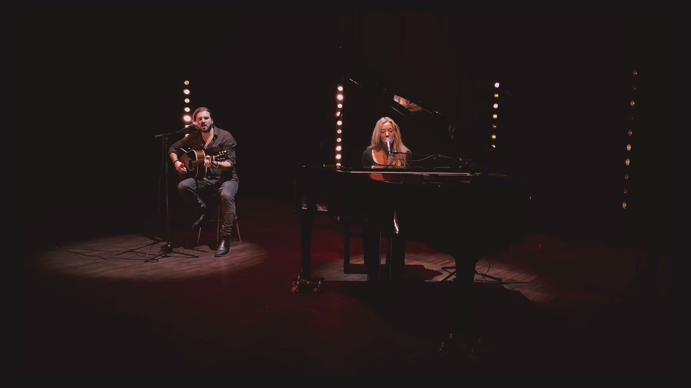
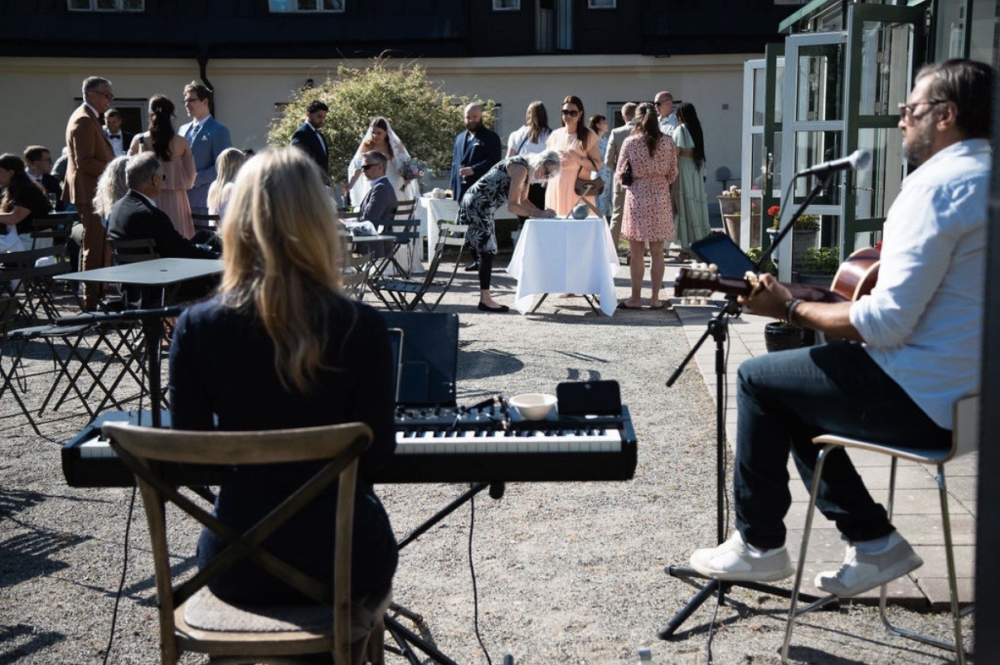
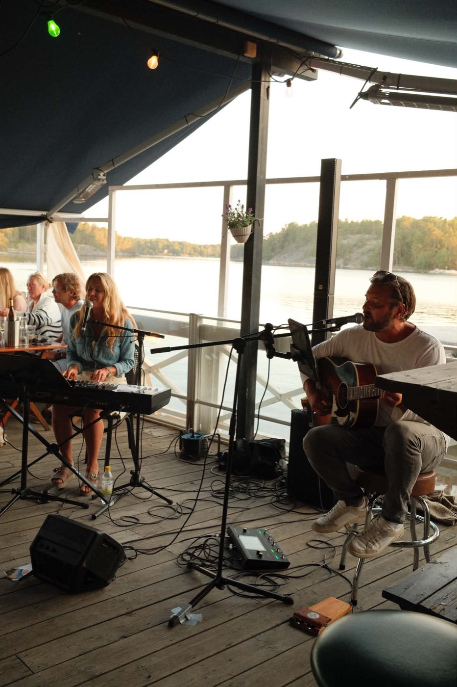

Klas Österman och Josefin Blomberg. Från en stilla vigsel till en hel konsert.

Bröllop & vigselEn personlig sång under vigseln och ett avslappnat mingel efteråt. Piano, gitarr och två röster ger en varm inramning utan att ta över samtalen.

Krog, fest & eventRestauranger, födelsedagar, företagskvällar och privata fester. Från lågmäld middagsmusik till låtar som samlar hela kvällen.
”Vi vill verkligen säga ett stort tack för så otroligt fin musik på vigseln och minglet! Tack för att ni bidrog och gjorde dagen så magisk.”
Evelina & Robert · Bröllop, juni 2026
”Tack för så vacker sång i kyrkan. Det blev precis som vi önskade. Så återigen, tack till er!”
Petra & Ken · Bröllop, juli 2026
”Stort, stort tack för att ni var med på vår dag! Musiken blev så otroligt vacker — wow, vilket bra jobb ni gjorde!”
Isabelle G · Bröllop, 2026
Inga datum är spikade just nu. Hör av dig så hittar vi ett.
Boka DuoviSkriv det du vet — datum, plats och ungefär vad det gäller. Resten löser vi tillsammans.